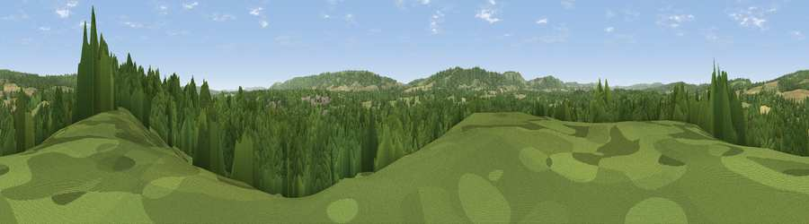

Viewpoint near Midhurst
#37462 in England · top 59% of its area beats it · near MidhurstWhere it is
The exact computed spot (SU 87375 21475). Click the marker for map links.
The view, rendered

A 360° render of this exact spot computed from the terrain model, tree cover and land cover — summer colours, afternoon light, calibrated against photographs of famous viewpoints. Real trees, hedges and buildings will differ in detail.
The panorama
Grey silhouette: terrain skyline in each direction (720 bearings, Earth curvature and refraction included). Dashed green: skyline with trees (+15 m) and buildings (+8 m) as obstacles. Blue strip: how far the ground is visible on each bearing.
Where the view opens
Wedge length = distance to the farthest visible ground on that bearing (vegetation-aware). Rings at 10, 25 and 50 km.
What fills the view
65% woodland · 23% grassland · 9% cropland · 3% built-up
Angular shares of the visible panorama (visual magnitude), not map area. Landscape diversity 0.41 (0–1 Shannon).
Key numbers
More beautiful places nearby
The staircase of upgrades: each row has a higher view potential than everything closer. Driving times are estimates from straight-line distance, calibrated against real road routing — check an actual route before setting out.
| Place | Direction | Drive | Score |
|---|---|---|---|
| Viewpoint near Midhurst | NNE · 1 km | ~3 min | 37.8 |
| Viewpoint near Cocking | SSW · 5 km | ~10 min | 78.4 |
| Linch Down | SSW · 5 km | ~11 min | 85.2 |
| Beacon Hill | WSW · 7 km | ~15 min | 85.8 |
| Chanctonbury Ring | ESE · 28 km | ~45 min | 87.0 |
| Viewpoint near St. Lawrence | SW · 55 km | ~77 min | 88.2 |
| Viewpoint near Niton | SW · 59 km | ~81 min | 89.2 |
| Viewpoint near West Bexington | WSW · 137 km | ~160 min | 89.5 |
50.98606, -0.75657 · source: screening · position refined by local search. Computed location — check access rights before visiting.